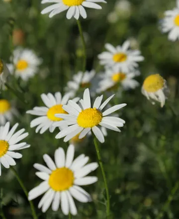
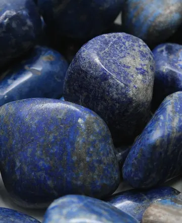

No hace falta ser bruja.
Hacen falta tres minutos.
Tu práctica espiritual diaria, en español.
Ritual diario siempre gratis · Premium con 7 días de prueba
Tu planta y tu mineral del mes
Cada mes, una planta y un mineral con su historia, su energía y un mini-ritual.


Todo lo que hay dentro
- 1ritual guiado cada día, de tres minutos GRATIS
- 12 + 12plantas y minerales, uno por mes
- 78cartas del tarot con su lectura PREMIUM · y tu carta del día GRATIS
- 1.728horóscopos, por tu signo y tu luna · el tuyo cada día GRATIS
- 60rituales para cada momento PREMIUM
- 30sesiones de yoga mental PREMIUM
- ☾calendario lunar con la luna real, y un oráculo para tus preguntas
El ritual de hoy · gratis, siempre
Tres minutos. Sin materiales que haya que comprar.
El ciclo tiene treinta días y vuelve a empezar con cada luna nueva. Mañana habrá otro.
Para Android · Sin anuncios · Tu diario solo lo lees tú
¿Prefieres que te escriba de vez en cuando? Déjame tu correo y te cuento las lunas, los sabbats y lo nuevo de la app, sin prisa y sin anuncios.
✦ Al apuntarte te llevas de regalo el Calendario Lunar de otoño e invierno (PDF): las lunas de septiembre a diciembre con su día y su hora, un ritual de cinco minutos para cada una, y los tres sabbats que cierran el año.
Pocos correos y con calma. Te borras cuando quieras y no comparto tu dirección con nadie.